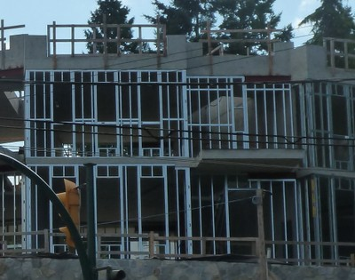
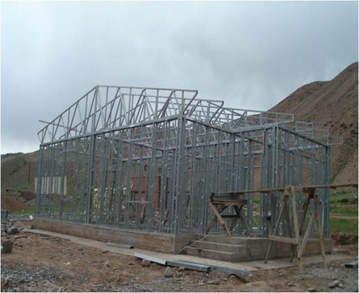

Miembros de acero conformado en frío [SL]
Miembros de acero que se forman a partir de chapa de acero plegada ( formado en frío ) . Normalmente se utiliza en construcciónd de viviendas de marcos de acero en conjunto con materiales en hojas que pueden proporcionar refuerzo.

Estructuras de acero conformado en frío , Canadá (S.Brzev)

Formación en frío de acero, detalle de la configuración, USA (S. Brzev)

Construcción en acero conformado en frío, Kyrgyzstan (K. Kanbolotov)